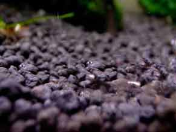

The Substrate
WHAT IS THE BEST SUBSTRATE FOR THE AQUARIUM?
Substrate in the aquarium is important for plant growth and bacteria production. In planted and aquascaped tanks the correct
choice of substrate is important when caring for concentrated plant life in the aquarium. Nature provides plants with soils,
sands and gravels rich in nutrients from shoreline runoff and rainwater. A planted aquarium is closed off to its surroundings.
Adding a nutrient rich substrate is essential for the continued success and growth of your aquatic plants.
Plants in the aquarium feed from the roots and the quality of the substrate will affect their color, growth and size. Popular
aquascaping plants have different reuqirements due to their root structures and growth patterns. For example HC and Glossostigma
excel with finer, high nutrient substrates.
Quality aquascaping substrates can elevate the inital cost of owning a planted
aquarium. These substrates however will often last the life of the aquarium making them one of the best investments during
setup phase. A poor quality substrate will very be difficult to change after adding water and aquatic life.

Plain Gravel
- For the planted aquarium plain gravel is not a recommended substrate due to it's inert nature and inability to supply
aquatic plants with necessary nutrients. To be effective it should be mixed with at least 50% of a nutrient rich additive or
commercial auqatic soil.
- Advantages- Very cheap substrate, very likely to be
inert and not intefere with water pH.
- Disadvantages- No added value to plants and does not distribute nutrients required in a heavily planted tank
to aid growth and health.

Fluorite/Seachem
- Seachem Fluorite is an excellent plant substrate. It is a porous clay gravel rich in iron, potassium and magnesium.
Seachem substrates range with differing macro and micro elements suiting different environments of aquarium plants.
Seachem products include micro particles that can cloud the tank. This substrate will either need to be rinsed before use or the
aquarium must be filled very slowly.
- Advantages- Seachem substrates come in a large range of colors, very high in necessary nutirents.
- Disadvantages- Expensive substrate and can initially cloud or discolor the aquarium water.

ADA Aquasoil (Amazonia ect.)

- Aquasoil is great for both backrgound rooted plants and also perfect for small foreground plants as a substrate.
It has an excellent composition of nutrients for aquatic plants. In addition it will drop the ph to just under 7 which is preferable
in a planted tank but may cause complications with some fish species. Make sure to check your pH requirements before you use this substrate.
- Advantages- Excellent for all types of aquatic plants. Drops pH to optimal planting level.
- Disadvantages- Expensive initial cost and may make pH unsuitable for fish species that require higher pH.

Clay or laterite
- This substrate can be very effective if topped with a layer of gravel that will not allow the substrate to displace or cloud
the water. It can become messy to set up and leave the aquarium very cloudy if done incorrectly. Moving plants may be an
issue and can leave the aquarium cloudy for periods of time after. Clay/laterite should be used by only experienced
aquarists.
- Advantages- Dense nutrient rich base. Very cost effective compared to other commercial substrates.
- Disadvantages- Difficult to use and setup. Can leave the tank cloudy for periods of time.
DIY soil/peat moss mix
- DIY in any part of a freshwater aquarium is a great choice and means you can create the substrate yourself for a very
reasonable cost. There are countless guides on how to do this and many include specific brands of soil and peat moss that are
appropriate for aquarium use. Do not use any soils before doing serious research as they can be laced with toxic fertilizers or
phosphates that are detrimental to your aquarium.
- Advantages- The cheapest option for an aquascaping substrate.
- Disadvantages- Finding appropriate low phosphate peat moss is difficult and risky.
Other Commercial Substrates
- Cheaper commercial substrates with brands such as Eco Complete or Upaqua are also suitable for the modern planted aquarium.
Lower quality substrates may intefere more with pH in the water and have differing quantities of nutrients for the plants. It is
important to read the labels to find exactly what is in each product. Be sure to check they will change your water qualities or ph
so you don’t end up with any problems.
- Advantages- Cheaper than ADA or Seachem substrates. Delivers required nutrients to the plants.
- Disadvantages- Lower quality products have a risk of higher phosphate or lower nutrient contents.
Additives such as tabs or pellets
- Tabs and fertilizer pellets aid large root plants by delivering nutrients in the tank only in the areas they are needed.
Pellets can be placed in an inert substrate such as gravel at the root base of large aquatic plants. This can act as a
substitute to using an organic substrate allowing the enthusiast to use any type, color or texture of substrate in its place.
- Advantages- Cost effective as only used in areas where planting occurs.
- Disadvantages- Low foreground plants have short root systems that would be unable to access nutrients.
Takeaway
Although substrates are very important to the plants growth, most substrates will do an excellent job.
Keep in mind pellets can be added later if necessary and liquid fertilizers can aid in specific element deficits.